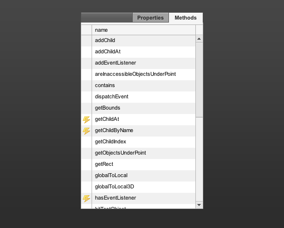

9. The methods panel
Many items in either code or display reference have methods next to properties as well. In the method panel you can see the public methods of a selected item. These public methods can be executed straight from the Monster Debugger by just double clicking on them. Unfortunately you cannot execute all methods from the Monster Debugger, this is because some methods require input that we cannot provide from within the Monster Debugger. Methods that can be executed are highlighted by this icon:
 Runnable method.
Runnable method.
While the Monster Debugger cannot show any comments from your files, it does tell you what kind of arguments you can send to the method. This feature can be very useful when you want to test a method without having to go through your entire application to execute it from your interface. If a method returns any data the Monster Debugger will display this on the right side of the interface.